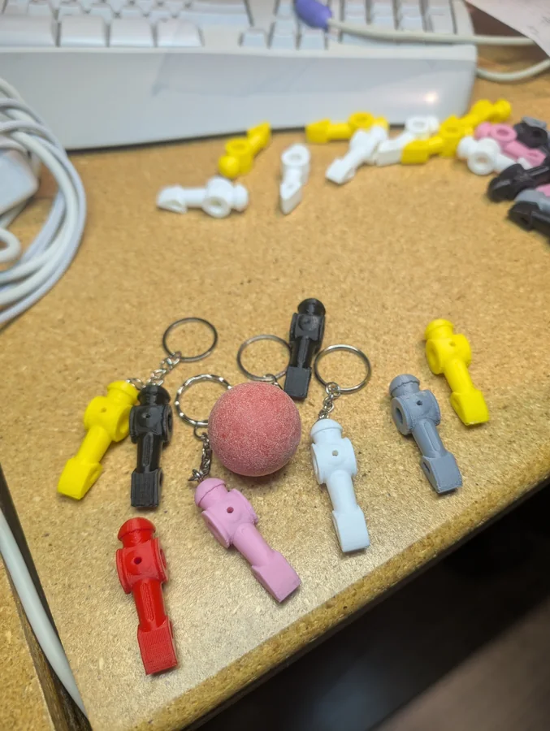

Seeing the whole picture.
When I’m designing something, I don’t stop at the application code. I think about how it connects to APIs, data, infrastructure and deployment—and whether the team will be able to maintain it without headaches later.
Based in Canada
I’m a Technical Architect, and I always get excited about solving difficult problems. I’ve always been curious and love trying new things, whether it’s building apps, tinkering with electronics, or 3D modelling and printing. Outside of work, I enjoy playing foosball, staying active, and exploring whatever happens to catch my interest.

My story
My mom tells me I used to take my toys apart with a screwdriver just to see how they worked. Putting them back together? That was another story.
That curiosity eventually led me to computers. Video games got me interested, and before long I was learning HTML, CSS and JavaScript and building websites. I even set up my own Ragnarok Online server. It never had many players, but that wasn’t really the point. I had fun learning Linux, setting up port forwarding and figuring out how to get everything running.
I studied Computer Science, but my first job in tech was in support, digging through logs, debugging issues and figuring out why things broke. I knew I wanted to be a developer, and it took a couple of years of pushing for the opportunity before I finally made the move.
I didn't stop learning once I got there. I worked on side projects, studied software design principles and practised coding interviews in my own time. Eventually, I moved to another company as an intermediate developer and kept taking on bigger challenges. I worked my way into a senior developer role and was later promoted to Technical Architect. Today, I'm trusted with some of the team's toughest technical problems and decisions. I'm proud of how far I've come, but there's always more I want to learn.
Engineering & leadership
I spend a lot of time thinking about the decisions behind the code: what will work now, what might cause trouble later, and how to make things easier for the people working on it.
When I’m designing something, I don’t stop at the application code. I think about how it connects to APIs, data, infrastructure and deployment—and whether the team will be able to maintain it without headaches later.
I enjoy being someone developers can bounce ideas off. When someone is stuck, I’d rather help them work through the problem than just hand over an answer. I want people to feel confident making decisions on their own.
Some of my favourite work starts with a bug nobody can quite explain. I follow it wherever it leads—code, databases, integrations or servers—until I understand what’s really happening.
I don’t think every problem needs a big redesign. Sometimes the better choice is a smaller change that’s easier to understand, deliver and maintain.
A few results
Most of my work happens behind the scenes. Here are three examples that stand out to me, without getting into private client details.
20 min → milliseconds
One page I worked on was taking roughly 20 minutes to load. The problem came down to oversized data transfer objects. After changing how that data was structured, the page-load time dropped to milliseconds.
30% → 80%+
My team increased JUnit test coverage from around 30% to more than 80%. I’m proud of what we achieved together.
500+ stores
I worked on automating the flow of digital flyer data into a retail platform serving more than 500 stores. It’s the kind of behind-the-scenes integration work that makes a large system easier to run.
Selected projects
Some projects start with a problem I want to solve. Others begin because I have an idea and want to see if I can make it work.
Independent software · In development
I’m building ISSF Trainer for people practising Olympic-style pistol events. I wanted training exercises, competition timing, scoring and rules in one place instead of having to piece everything together.
It’s still in development, and I’m refining it as I learn more about what makes a training tool genuinely useful.
I made these 3D-printed badges for the foosball tables at Ottawa Foos, the club I play with. They feature the club’s logo and celebrate its 25th anniversary.
It was a fun way to put my 3D printing hobby to use for a club I’m part of.

I built a smart mirror to show things like the time, calendar and weather. Getting the screen to respond to motion was trickier than I expected. HDMI-CEC wasn’t working with the display, so I tried a motion sensor and infrared control instead. Getting the IR signal right turned into its own little project.

I started with a Prusa printer and now use a Bambu Lab H2C. I enjoy the whole process, from modelling something on screen to seeing how it prints and tweaking the design when it doesn’t turn out quite right. Some prints are practical; others are just for fun, like these foosball keychains.


Away from work
Gymnastics and tricking used to be a big part of my life. I even kept practising in my living room during the pandemic. These days, I’m more focused on staying strong, being active and looking after my health.
A double aerial twist from my tricking daysI play foosball with Ottawa Foos. I like the competition, but I also enjoy the people and the community around it. It’s even inspired a few of my 3D printing projects.

I’ve also gotten into ISSF Standard Pistol competition, which inspired me to start ISSF Trainer. On a different note, I’m interested in personal finance and investing. I’ve made videos about what I’ve learned in the past, and I’d like to get back into video editing someday.
Technical background
SAP Commerce Cloud, Java, REST APIs, system integration, SQL
Linux, application servers, load balancers, Docker, CI/CD
JUnit, code reviews, developer mentorship
Python, Flutter, Raspberry Pi, CAD and 3D printing
Elsewhere
A little more about my career and the work I do in software.
Connect on LinkedIn ↗Some of the code and side projects I’ve shared publicly.
Explore public work ↗Videos I’ve made over the years about tricking, travel and personal finance. I haven’t posted regularly in a while, but it’s something I’d like to return to.
Watch on YouTube ↗